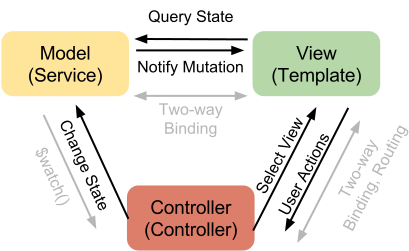
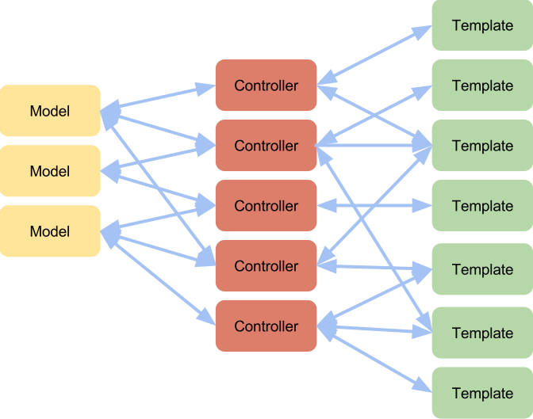
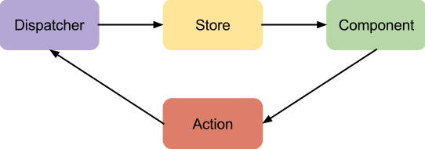
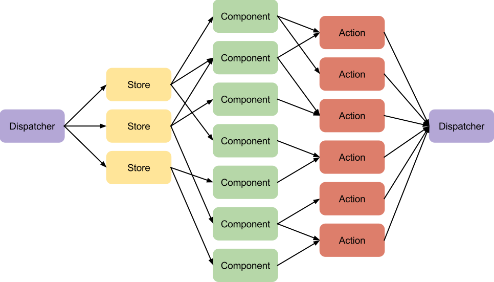
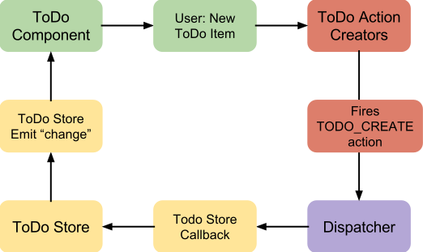

Elegantly Fluxing the Angular Way
Flux is an approach to building large GUI applications. Characterized by enforcing a single data flow, flux guarantees certain behaviors and patterns when data moves through an application. These guarantees make it easier to reason about code, making applications and their modules more reliable, composable, and scalable. With better reasoning also come techniques and tools to highlight and exorcise bugs. Application data only moves in four well defined locations, and only mutates in a single place. The potential for side effects, and time spent hunting bugs, is drastically reduced compared to similar MVC designs. We will show all these benefits in this post.
The prevalent MVC architecture diagram component has three objects and six interactions (Fig 1), but as applications scale, the clean linear data flow grows and becomes cluttered (Fig 2).
 Fig 1: Typical “MVC” triangle. Models notify Controllers and Views with Observable events. Controllers change views and states as desired. Views can ask for state at any time, and push user actions to controllers. Angular simplifies and obfuscates with two-way binding.
 Fig 2: Typical “Data Binding” mishmash in MVVM, arising from loose application architecture and planning. Notice every arrow is two-way.
Flux eschews the free-for-all two-way data binding in favor of certain well-defined push mechanisms. In flux, there are four parts to the pattern, each with one incoming and one outgoing data path, for a total of four interactions (fig 3). The pieces are Actions, objects that encapsulate a requested change in state; the Dispatcher, a utility that manages the data flow; Stores, containers and single sources of truth for application data; and Components, reusable and composable UI elements that make the view. In a complex application, the data flow goes from a graph with high cut size to a graph with a very low cut size (fig 4) - any piece can be replaced with a few number of refactorings.
 Fig 3: Basic Flux data flow. Dispatchers call Stores with Actions. Components observe stores, and create Actions. Data flows one direction, and one arrow may be active at a time (no new actions while mutating).
 Fig 4: Flux data flow in a complex application. (The dispatcher is a singleton.)
Further, flux enforces low cyclomatic complexity on the data flow graph: when the Dispatcher component handles an Action, the dispatcher guarantees no other Actions are simultaneously being dispatched. This eliminates a "mutation cascade", where a user action triggers some state to mutate, that itself causes some other state to mutate. These cascades can be very difficult to reason about both as a developer who must find the bug in a middle algorithm, or as a user when disparate pieces of the application all change together. Race conditions are virtually eliminated and in the rare instance that order needs to be preserved the dispatcher has a ‘waitFor’ method that will ensure correct sequencing of Action Handlers.
How does this all fit together?
 Fig 5: The four data paths in the original Flux implementation. When the user fills in a new ToDo item in the input and hits ‘enter’, the Component asks the ToDo Action Creators to make a new Action. The Action Creators do so, and pass a TODO_CREATE action to the Dispatcher. The Dispatcher iterates any stores with a registered dispatch handler, passing the TODO_CREATE action to the handler. The ToDo store’s handler looks for the TODO_CREATE event, updating its internal collection of ToDos. After updating the ToDo store emits a Change event, which the ToDo component listens to. Upon receiving the Update event, the ToDo component rerenders, and the application is in a stable state.
Song Flux provides the Dispatcher component of the Flux architecture, with some modifications. In the original Flux implementation, Actions were a tuple of (const string action, object data). In Song Flux, Actions are instances of Javascript Constructor Functions; that is, every type of Action is a function, which will be instantiated with the new operator when created by a component. Stores register not for all dispatched actions, but individually for each type of action the store is interested in receiving. This approach greatly reduces boilerplate overhead of setting up Flux data flows, and does not reduce flexibility or power of the approach.
Like the original Flux implementation, Song Flux only enforces single action at a time in the Dispatcher. Actions are always dispatched within a $digest loop, either triggered by user action on eg an ng-click handler, or as the result of some asynchronous callback eg a $http return. The dispatcher verifies that within an action dispatch, and within a $digest loop, only a single Action is generated. By preventing multiple actions per $digest, the uncommon but frustrating situation of a “mutation cascade”, which can often result in the dreaded $infDigest error.
Song Flux does encourage “traditional” Angular MVVM architecture within reusable components of a web application. The benefits of two-way data binding have demonstrated themselves time and again in the Angular ecosystem. The failing is only when it comes to scaling an application beyond a couple interacting data sources and views.
To consume Actions, the Action constructors must be injected into Stores for registering and Components to instantiate and dispatch. Actions can be created and injected individually. In practice, it was found to be much simple to combine all Action constructors for a part of the application (generally at the Store module level) into a single injectable Actions object, with each constructor hanging off that.
Trkstr is a music player. In this stripped code from the application, a PlayAction is dispatched whenever the music player should start playing a new track. Specifically, a Library component will create and dispatch a PlayAction when a user clicks on a track in an album listing. The PlayAction has a reference to which track to play, and a reference to a dispatcher keyed to the trkstr module, the root module for the entire application. It has a utility method to quickly dispatch itself on that dispatcher.
The PlayerStore is a data source to manage the currently playing track, or "Nothing Playing..." if everything has been stopped. The PlayerStore extends prototypically from a global EventEmitter ptototype, has a reference to the 'trkstr' dispatcher, and manages a set of events to notify listeners when the store's data mutates. The store registers to any PlayActions that are emitted, passing them to the play method on its prototype. The play method simply updates the current track and fires the event.
The PlayerComponent is a combination of a traditional Angular Directive, Controller, and Template. The Directive is fairly thin, but uses a Directive Factory pattern. Rather than simply being a function, the Directive is a class with a static method to return new instances as needed. The Directive constructor then sets the typical Directive Definition properties on itself. By convention, the Directive exposes the controller as state to the Template; the component always uses an isolate scope; and the isolate scope properties (none in this example) are attached to the Controller instance. The controller itself watches for the TrackChanged event, where it updates the isolate scope track variable and lets traditional two-way databinding drive the update to the audio's src attribute.
The template just binds to the current track title and path, letting the HTML5 audio tag do the heavy lifting.
This excerpt from the Library Component manages a list of Albums and their tracks. The Library manages a collection of albums and their track listings. The template iterates those listings, and when a user clicks a track the ng-click binding executes the Controller's play action inside a $scope.$digest. The play method creates a new PlayAction with the track and dispatches. The dispatcher sends it to the handler registered at PlayStore.prototype.play. The PlayStore triggers a TrackChanged event. The Player Component sees the new track. The $digest is still in progress, so it updates the new (primitive string) value. The Dispatch backs out, the $digest settles, and the Audio tag begins playing the new track.
Angular developers should be familiar with the common “injectable concepts” - services, factories, filters, directives, etc. Song flux introduces three new concepts, as well as the Song Factory for creating dispatchers per module. The three new concepts are stores, an extension of factories; components, a combined directive, controller, and template; and actions, instantiable functions representing Flux actions.
A Store is an extension on top of ServiFactoProviders. Stores are expected to be the single source of truth for a particular bit of data in an application. Stores are the only code that registers to receive dispatched events. Stores can expose their registration hooks, to allow Stores to explicitly declare asynchronous
A Component is a combination of a Directive, a Controller, and a Template. Components themselves follow the data-bound MVC approach very closely, but do so in isolation. The Directive exposes the Component in HTML; the Controller listens for events from the Stores the component is interested in, and the Template provides the HTML for the view. Song Flux recommends that Component Directives always use isolate scopes in conjunction with bindToController, and always set controllerAs to state. Controllers should be instantiable functions, should have Actions and Stores injected, and should listen to Store mutation events to update internal data. Templates should only include local binding and data, isolating dependence on other components through known properties exposed by the controller. User interaction should have templates call controller methods, which create and dispatch Actions.
An Action is an object that represents a request to change application state. In traditional MVC a user action would trigger a method on a controller, which directly updates state in the model. Flux decouples this interaction. While the vast majority of time a dispatched action will go directly to some store and result in updated state, Flux decouples these to allow for creating more complex interaction flows. In the canonical examples, this is used when a store calculates meta data, but wants to guarantee the store handling the data itself has a chance to update the base data list. In Song Flux, Actions are instantiable function constructors. This allows the Action Constructor itself to be used as a key for registering and dispatching, rather than relying on pattern matching strings.
The dispatcher and other utilities are provided by Song Flux, and have APIs similar to their Facebook counterparts.
Bugs now live in one of two places: business algorithms, flux application wiring. When debugging and testing, all data is immediately local, and numerous common issues can be detected by the library at runtime (dispatching incorrect events, tying to the wrong module namespace).
Because each section of code relies only on a single object with a well-known type signature or shape, any piece of the application can be pulled out and replaced with a mock, stub, or spy. Components can be given a piece of mock data, rendered, and have their DOM inspected independent of the implementation of the data store.
Want to go crazy? Have your AB test selectively change the template and component code. The store doesn't care, and your component only needs to know the given data structure and Actions available.
One huge early draw of Angular JS was (and is) the ease at which anyone with a little HTML knowledge can immediately build rich interactions on the web. As projects scale in codebase, developer contributions, and user base, an enforced architecture grows ever more critical. With an approach like SOng flux, the barrier to entry rises- to see any result on screen, four objects must be instantiated and wired together.
The architecture is not "complete" - there are many decisions teams must make in what idioms they will use for their project. Do Actions self-dispatch? Does a factory create an action constructor or an action instance? Song Flux does not care which one is used leaving the decision purely to the team and project.
Along with the first con, the application becomes massively decoupled. There are in fact more moving parts, even if there are fewer places for the parts to be moving. Within components, UI specific data still flows in the "traditional" angular $digest way.